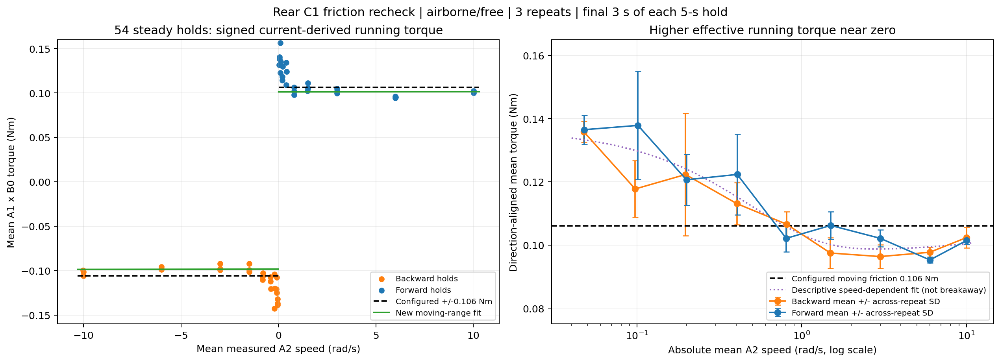
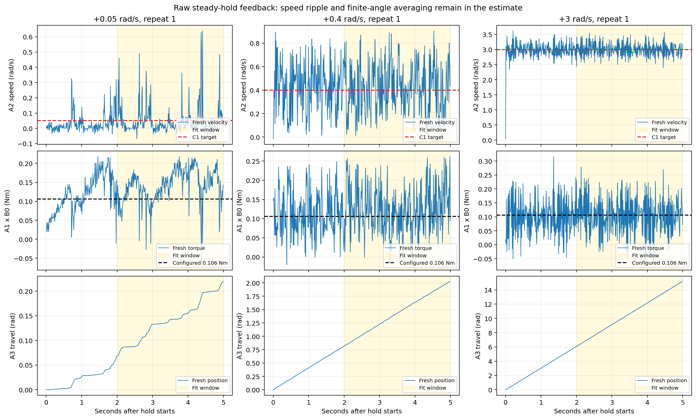

Running torque versus speed
Error bars show between-repeat standard deviation, three holds per direction/speed. The dotted fit is descriptive; its zero-speed extrapolation is not measured breakaway friction.

Comprehensive C1 campaign, 2026-11-01; analysis 2026-11-02. Rear airborne and free. 54 steady holds, nine speed magnitudes, both directions, three repeats. A1 current × B0 is a torque estimate.
Moderate-speed friction remains about 0.10 Nm. Positive viscous damping is unresolved. Near-zero effective running torque is greater and cannot be represented well by one constant.
| Parameter | Configured | New moving-range fit, 1.5–10 rad/s |
|---|---|---|
| Moving friction | 0.106 Nm | 0.099702 Nm (−5.94%) |
| Viscous coefficient | 0 Nm·s/rad | 0.00002605; bootstrap interval includes zero |
| Static threshold | 0.106 Nm, provisional | Not identified by sustained-speed holds |
Full methods, limitations and conclusions · Numerical results · Independent checks · 54 hold means
Error bars show between-repeat standard deviation, three holds per direction/speed. The dotted fit is descriptive; its zero-speed extrapolation is not measured breakaway friction.

Unsmoothed A2 speed, A1-derived torque and A3 displacement. The final three seconds are shaded. Near-zero A3 movement is intermittent; complete revolutions are not covered.

No actuator, firmware or deployment configuration changed.